Where are you?
U kwihi?
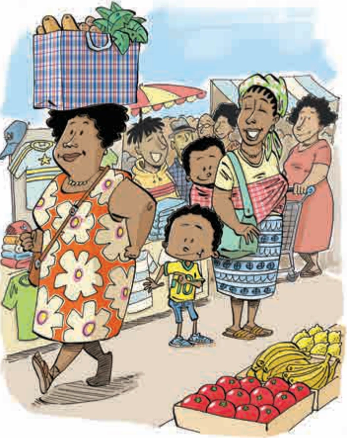
“We’re going shopping! We’re going shopping!” Afrika jumped up and down in front of Dintle. His mother, Mme wa Afrika, smiled at him, and Dintle clapped her hands.
“Hi ya eku xaveni eswitolo! Hi ya eku xaveni eswitolo!” Afrika a tlulatlula a ya ehenhla ni le hansi emahlweni ka Dintle. Mhani wa yena, Mme wa Afrika, a n’wayitela, kutani Dintle a phokotela mavoko.
“Yes,” said Mme wa Afrika, “so put your shoes on. We have to hurry. We still have to walk to the bus stop.”
“Ina,” ku vula Mme wa Afrika, “ambala tintanghu ta wena. Hi fanela ku hatlisa. Ha ha fanela ku famba hi ya exitichini xa bazi.”
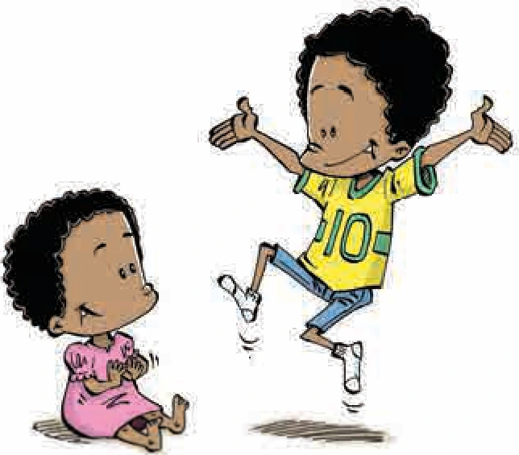
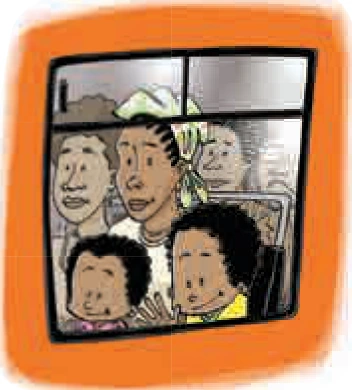
At the bus stop, there were a lot of people waiting for the bus. And when they all got onto the bus, everyone was a bit squashed. Mme wa Afrika held Dintle on her lap. Then a lady sat down next to her. Afrika sat on the other side of his mother, squashed against the window. But he didn’t mind at all because it meant that he could look out of the window.
Exitichini xa bazi, a ku ri na vanhu votala lava a va yimele bazi. Loko hinkwavo va nghena endzeni ka bazi, un’wana na un’wana a manyiwa. Mme wa Afrika a xinge Dintle. Kutani wansati un’wana a tshama laha tlhelo ka yena. Kasi Afrika yena a tshame hala tlhelo lerin’wana ra mhani wa yena, a a manyeke kusuhi ni fesitere. Kambe hinkwaswo leswi a swi nga n’wi karhati hikuva a swi vula leswaku u ta kota ku vona ehandle hi fesitere.
Finally the driver called out, “Last stop!”
Ekuheteleleni muchayeri a huwelela a ku, “Xitichi xo hetelela!”
“Come on, Afrika. This is where we get off,” said his mother.
“Tana Afrika, hatlisa. Laha hi kona laha hi xikaka kona,” ku vula mhani wa yena.
After they got off the bus, Mme wa Afrika tied Dintle on her back. “Stay close to me,” she told Afrika. “This is a very busy place.”
Endzhaku ka loko va xikile ebazini, Mme wa Afrika a bebula Dintle enhlaneni wa yena. “Famba hilaha kushi ka mina,” a byela Afrika. “Leyi i ndhawu ya nkitsinkitsi.”
It was busy. There were people carrying bags and pushing trolleys full of shopping. There was also a lady with her shopping balanced on her head.
A ku ri ni nkitsinkitsi. Vanhu a va rhwele minkwama van’wana va susumeta titiroli ti tele timpahla ta leswi va nga swi xava. Nakambe a ku ri na wansati loyi a dzenengele leswi a nga swi xava enhlokweni.
“Can you do that, Mama?” Afrika asked his mother.
“Xana wena wa swi kota ku endla leswiya, Mama?” Afrika a vutisa mhani wakwe.
“Do what?” asked Mme wa Afrika.
“Ku endla yini?” ku vutisa Mme wa Afrika.
“Carry things on the top of your head like that,” said Afrika.
“Ku rhwala mpahla enhlokweni ya wena hi ndlela liya,” ku hlamula Afrika.
“Of course I can. It’s easy,” said his mother.
“Ina ndza swi kota. Swa olova,” ku vula mhani wa yena.
Afrika watched the lady walk away until she disappeared into the crowds of people standing in between the market stalls.
Afrika a langutisa wansati loyi ku kondza loko a nyamalala exikarhi ka mitshungu ya vanhu lava a va yime exikarhi ka switolo swa makete.
“I bet I can carry things on my head too!” Afrika said to himself. He saw an empty plastic cooldrink bottle on the ground. He picked it up and put it on his head, but he had to hold onto it because it kept falling off.
“Ndza beja na mina ndzi nga swi kota ku dzenengela!” Afrika a ehleketa a ri yexe. Kutani a vona bodlhela ra pulastiki ra kholodirinki leri nga riki na nchumu ri ri ehansi. A ri rholela kutani a ri veka ehenhla ka nhloko, kambe a boheka ku ri khoma hikuva a ri tshamela ku wa.
“Eish!” said a girl right next to him. “I’ll show you how to do that!” She took the cooldrink bottle, put it on her head, and with her nose in the air, she walked around Afrika like a proud princess.
“Eish!” ku vula nhwanyana loyi a ri kwala tlhelo ka yena. “Ndzi ta ku komba leswaku swi endlisiwa ku yini!” A teka bodlhela ra kholodirinki, a ri dzenengela enhlokweni, a tlakuse nhompfu ya yena emoyeni, a rhendzeleka laha Afrika a yime kona ku fana ni n’wana wa hosi loyi wa manyunyu.
“Yoh!” said Afrika, very impressed. “What’s your name?”
“Yooo!” ku vula Afrika, hi ku nyanyuka. “Hi wena mani vito ra wena?”
“I’m Asanda,” she said.
“Hi mina Asanda,” a hlamula.
“I’m Afrika. How did you learn to do that?” Afrika asked.
“Mina ndzi Afrika. U dyondzise ku yini ku endla sweswo?” ku vutisa Afrika.
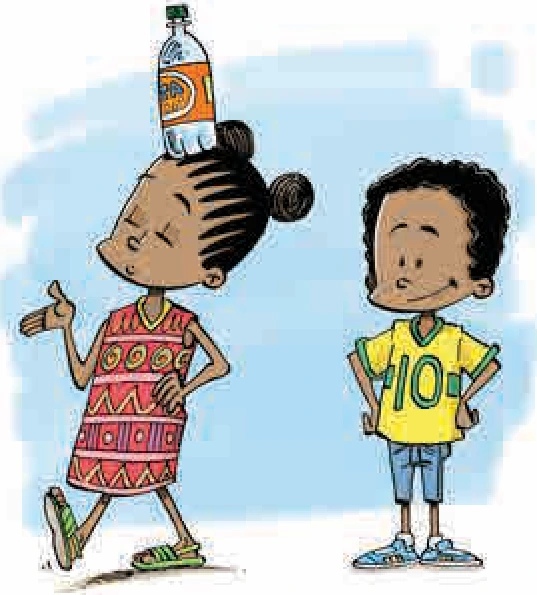
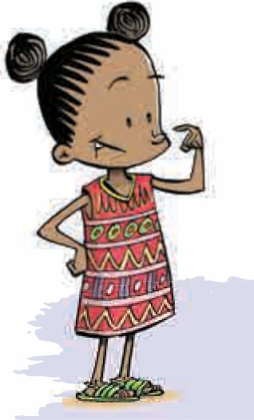
“I first tried walking with books on my head,” she said. “You have to keep your head still when you walk.” She put the cooldrink bottle back on top of Afrika’s head. “Walk slowly now, with your nose in the air, like a prince.”
“Ndzi rhange ndzi ringeta hi ku famba ndzi rhwale tibuku enhlokweni,” a hlamula. “U fanele u nga ninginisi nhloko ya wena loko u ri karhi u famba.” Kutani a vuyisela bodlhela ra kholidirinki ehenhla ka nhloko ya Afrika. “Sweswi famba khwatsi, yimisela nhompfu ya wena emoyeni, wonge i n’wana wa hosi.”
Afrika walked around Asanda very slowly, keeping his head still with his nose in the air. And the bottle stayed on!
Afrika a rhendzeleka hi Asanda hi ku nonoka, a nga ninginisi nhloko ya yena na nhompfu yi ri emoyeni. Kutani bodlhela ri tshamiseka!
“Look, Ma! Look at me …” said Afrika, but he couldn’t see his mother! Someone bumped into Afrika and the cooldrink bottle fell off his head. But he had forgotten about the bottle – he wanted to know where his mother was!
“Languta Ma! Ndzi langute …” ku vula Afrika, kambe a nga n’wi voni mhani wa yena! Hiloko munhu un’wana a tlumbana na Afrika kutani bodlhela ra kholodirinki ri wa enhlokweni. Kambe a rivele hi bodlhela – a a lava ku tiva lomu mhani wa yena a nga kona!
“Where are you, Mama?” he called. There was no answer. “Mama!” he called a little louder. Still no answer.
“Mi kwihi, Mama?” a huwelela. A nga kumi nhlamulo. “Mama!” a huwelelela ehenhlanyana. Na sweswi a nga kumi nhlamulo.
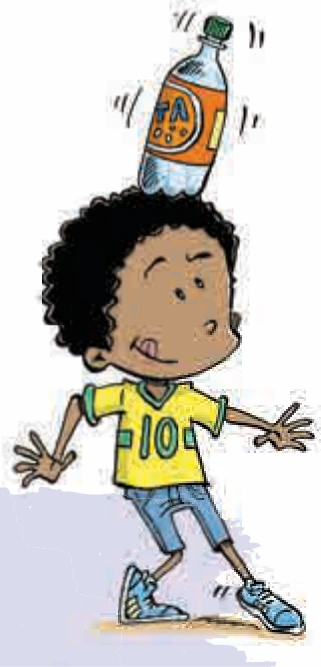
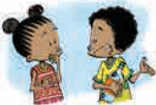
“My mother is lost!” said Afrika to Asanda. “We were on our way to the book stall on the corner, but now she’s gone!”
“Mhani wa mina u lahlekile!” Afrika a byela Asanda. “A hi ri endleleni yo ya exitolo xa tibuku le khonweni, kambe sweswi u fambile!”
“I’m going to the book stall too! I’m going to buy a storybook with the money I’ve saved. Maybe your mama is at the book stall. Let’s go find her!” suggested Asanda.
“Na mina ndzi ya exitolo xa tibuku! Ndzi ya xava buku ya mitsheketo hi mali leyi ndzi nga tihlayisela yona. Kumbexana mhani wa wena u nghene exitolo xa tibuku. A hi fambi hi ya n’wi lava!” ku ringanyeta Asanda.
Together Asanda and Afrika walked through the crowds of people. All of a sudden Afrika heard his name! “Afrika! Afrika! Where are you?”
Va ri swin’we Asanda na Afrika va famba va tsemakanya mitshungu ya vanhu. Hi nkarhi walowo Afrika a twa vito ra yena! “Afrika! Afrika! U kwihi?”
“That’s my mother’s voice,” said Afrika. “Shame, she is lost! I can hear she’s upset. It sounds as though she’s near the book stall. Come, let’s run, Asanda!”
“I rito ra mhani wa mina rero,” ku vula Afrika. “Mbuya, u lahlekile! Ndza swi twa leswaku u hlundzukile. U twala a ri ekusuhi na xitolo xa tibuku. Tana, a hi tsutsumi, Asanda!”
Together the children ran to the book stall, and there, right in front of it, were Mme wa Afrika and Dintle. Mama opened her arms and Afrika ran straight into them.
Va ri swin’we vana va tsutsuma va ya exitolo xa tibuku, kona kwale, kwala mahlweni ka xona, a ku ri na Mme wa Afrika na Dintle. Mama a pfula mavoko kutani Afrika a nghena eka wona hi ku kongoma.
“Hello, Mama, are you alright?” asked Afrika. “Don’t worry now, we’ve found you and Dintle. You aren’t lost anymore.”
“Xewani, Mama, xana u tsakile?” ku vutisa Afrika. “U nga ha vileli sweswi, mina na Dintle hi ku kumile. A wa ha lahlekanga.”
Dintle was very happy to see her big brother. Afrika bent down and gave her a hug.
Dintle a tsakile ku vona buti wa yena. Afrika a korhama a n’wi vukarha.
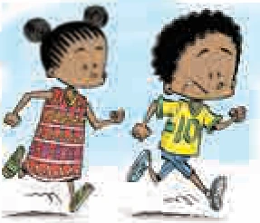
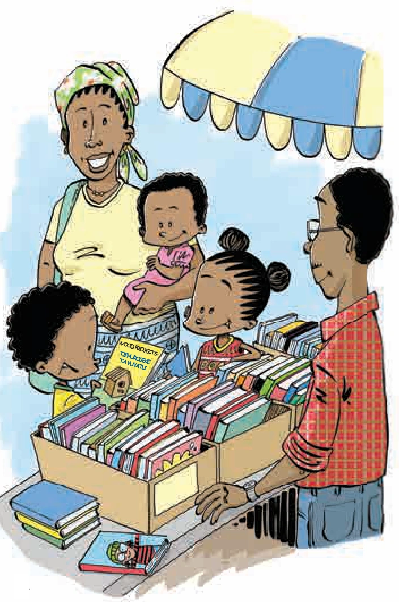
“Mama, this is Asanda, my new friend,” said Afrika. “She taught me how to balance a cooldrink bottle on my head. She wants to buy a book.”
“Mama, loyi i Asanda, munghana wa mina lontshwa,” ku vula Afrika. “U ndzi dyondzisile ku dzenengela bodlhela ra kholodirinki enhlokweni. U lava ku xava buku.”
“Hello, Asanda, I am glad to meet you,” said Mme wa Afrika smiling. “Now, let’s look at the books and see what we can find! Afrika, remember you wanted to learn how to make a bird house.” They all spent some time looking at the books and Mama found one which showed you how to make different things from wood.
“Xewani, Asanda, ndzi tsakile ku ku tiva,” ku vula Mme wa Afrika a ri karhi a n’wayitela. “Sweswi, a hi languteni tibuku hi vona leswaku hi nga kuma tihi! Afrika, tsundzuka leswaku a wu lava ku dyondza ku aka xisaka xa xinyenyana.” Hinkwavo va tekile nkarhi va ri karhi va languta tibuku hiloko Mama a kuma buku leyi yi dyondzisaka ku endla swilo swo hambanahambana hi timhandze.
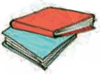
“Please, may I have it?” Afrika asked his mother.
“Ndza kombela, xana ndzi nga yi teka?” Afrika a vutisa mhani wa yena.
“Yes, if you like it,” said Mama.
“Ina, loko kuri leswaku wa yi lava,” ku hlamula Mama.
Then it was time to go. “Look, Asanda! I’m taking my book home on my head!” Afrika said, balancing his new book on his head.
Kutani nkarhi wo famba wu fika. “Vona, Asanda! Ndzi ya ekaya ndzi dzenengele buku ya mina enhlokweni!” ku vula Afrika, a dzenengele buku ya yena leyintshwa enhlokweni.
“Don’t forget to keep your nose in the air, like a prince!” laughed Asanda.
“U nga rivali ku tlakusela nhompfu ya wena emoyeni, wonge i n’wana wa hosi!” Asanda a hleka.
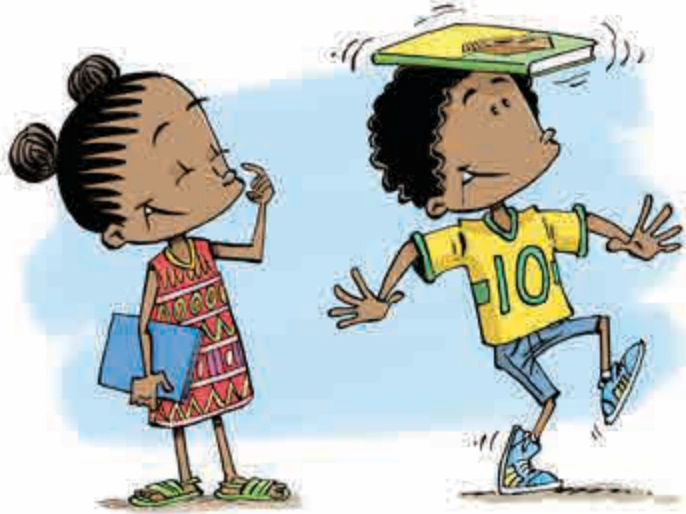
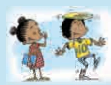
Afrika is at the market with his mother and younger sister, Dintle, when he meets a new friend, Asanda. But Afrika is so busy learning how to carry things on his head that he loses his mother! Will he be able to find her in the crowds of people at the market?
Afrika a ri eswitolo na mhani wakwe na ndzisana ya yena ya nhwanyana, Dintle, loko a ta hlangana na munghana wa yena lontshwa, Asanda. Kambe Afrika yena u endla nghingiriko wo dyondza ku dzenengela swilo enhlokweni ku fika laha a nga lahlekela hi manana wakwe! Xana u ta swi kota ku n’wi kuma exikarhi ka ntshungu wa vanhu lowu wu nga eswitolo?
Nal’ibali is a national reading-for-enjoyment campaign to spark and embed a culture of reading across South Africa. For more information, visit www.nalibali.org or www.nalibali.mobi
Nal’ibali i pfhumba ra rixaka ro hlayela ku tiphina ku tlhontlha ni ku simeka ntolovelo wo hlaya eAfrika-Dzonga hinkwaro. Ku kuma vuxokoxoko hi xitalo, endzela www.nalibali.org kumbe www.nalibali.mobi